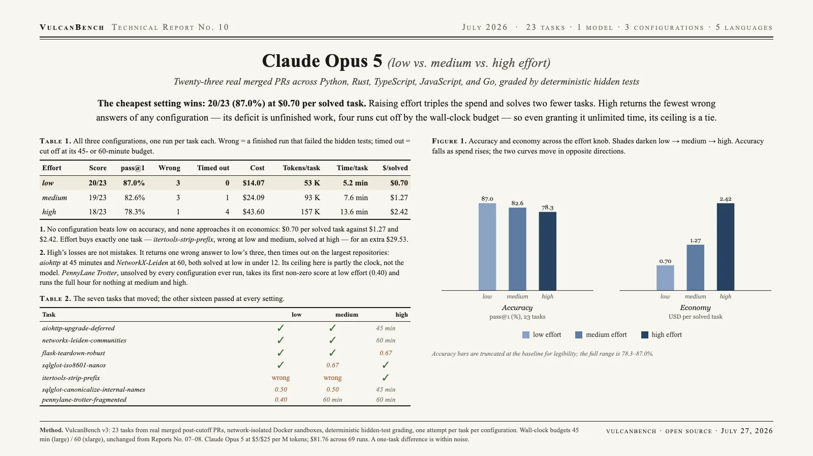

Claude Opus 5’s cheapest setting is its best: 20/23 (87.0%) at $0.70 per solved task on low effort. Score falls at every step up the knob — 20 → 19 → 18 — while suite cost triples. The deficit is unfinished work, not bad work: high effort returns the fewest wrong answers of any setting and the most wall-clock timeouts, so even granted unlimited time its ceiling is a tie, at 3.1× the cost.

| Effort | Score | pass@1 | Wrong | Timed out | Cost | Tokens/task | Time/task | $/solved |
|---|---|---|---|---|---|---|---|---|
| low | 20/23 | 87.0% | 3 | 0 | $14.07 | 53 K | 5.2 min | $0.70 |
| medium | 19/23 | 82.6% | 3 | 1 | $24.09 | 93 K | 7.6 min | $1.27 |
| high | 18/23 | 78.3% | 1 | 4 | $43.60 | 157 K | 13.6 min | $2.42 |
Wrong = a finished run that failed the hidden tests; timed out = cut off at the 45-minute (large-repository) or 60-minute (xlarge) wall-clock budget, unchanged from Reports 07 and 08. Tokens are billed tokens; time is sandbox wall-clock.
Low is never worse than high, and costs a third as much. Measured, low leads 20 to 18. Two of high’s three regressions are budget cutoffs on tasks it solves at low — grant it unlimited time on both and it reaches 20/23, a tie, at 3.1× the cost. No reading of the sweep has paying for effort winning.
Effort trades wrong answers for unfinished runs. Wrong answers fall (3 → 3 → 1); runs that never finish climb (0 → 1 → 4). High spends 3× the tokens and 2.6× the clock per task, then times out on the biggest repositories — networkx-leiden was cut off at 60 minutes after solving in 11.6 at low. The one regression the clock does not explain is flask-teardown-robust: it finished, and returned a worse patch.
Effort buys exactly one task. itertools-strip-prefix is a genuine wrong answer at low and medium and solved at high — the same task GPT-5.6 Sol went 0-for-3 on in Report 07. One task, for an extra $29.53 of suite spend.
First crack in a wall. pennylane-trotter-fragmented had never scored above zero for any model on v3. At low effort Opus 5 finishes it with a 0.40 partial; at medium and high it runs the full 60 minutes and scores nothing. Report 07’s effort-discriminator inverts too: flask-teardown-robust, which every earlier model needed high effort to solve, falls to Opus 5 at low.
| Task | low | medium | high |
|---|---|---|---|
| aiohttp-upgrade-deferred | ✓ | ✓ | × timed out, 45 min |
| networkx-leiden-communities | ✓ | ✓ | × timed out, 60 min |
| flask-teardown-robust | ✓ | ✓ | partial (0.67) |
| sqlglot-iso8601-nanos | ✓ | partial (0.67) | ✓ |
| itertools-strip-prefix | × wrong | × wrong | ✓ |
| sqlglot-canonicalize-internal-names | partial (0.50) | partial (0.50) | × timed out, 45 min |
| pennylane-trotter-fragmented | partial (0.40) | × timed out, 60 min | × timed out, 60 min |
All five timeouts hit their wall-clock budget to the second; none was step-limited. A timeout scores 0.0 but is a different failure from a wrong answer. Partial scores below 1.0 count as unsolved.
Five of six unfinished runs in the first high-effort pass died on a hardcoded 16,000-token output cap in the harness: thinking bills against max_tokens, so raising effort raised the truncation rate, and the harness scored each empty patch as a failed attempt — indistinguishable from a wrong answer. The cap now scales with effort (32 K → 128 K) and a truncated response raises instead of failing silently. Every run in this report was produced under the fix. It reaches past this report: every prior VulcanBench result ran under the 16 K cap, and any run that hit it was scored as a wrong answer. Reports 07 and 08 cannot be re-checked — their raw runs have rotated out of retention.
Same 23 v3 tasks as Reports 07 and 08 (real merged post-cutoff PRs across Python, Rust, TypeScript, JavaScript, Go), graded by deterministic hidden tests in a network-isolated Docker sandbox, one attempt per task per configuration. Claude Opus 5 at $5 / $25 per million tokens. Caveats: single attempts — a one-task difference is within noise — and four of high’s five failures are wall-clock cutoffs, so its ceiling here is partly the budget, not the model. An extended-budget ablation would separate the two.
{kind=link}